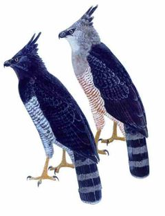
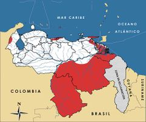

Morphnus guianensis
| Águila monera | |
|---|---|
|  | |
| Riesgo de extinción | |
 Vulnerable (UICN) | |
| Clasificación científica | |
| Reino: | Animalia |
| Filo: | Chordata |
| Clase: | Aves |
| Orden: | Falconiformes |
| Familia: | Accipitridae |
| Género: | Morphnus |
| Especie: | Morphnus guianensis |
| Nombre binomial | |
|
Morphnus guianensis Daudin, 1800 | |
| Distribución | |
|
 Mapa de distribución de Morphnus guianensis | |
Contenido
Información de Evaluación
- Categoría y Criterio Regional: Vulnerable A3cd
- Fecha de Evaluación Regional: 2015
- Evaluadores: Jesús Morales-Campos y Ariany García-Rawlins
- Categoría y Criterio Global: Casi Amenazado
Justificación
Evaluaciones Previas
1999: Casi Amenazado (NT)
2008: Vulnerable (VU)
Información General
Nombres comunes
Águila monera, águila encrestada, árpía menor, Crested Eagle.
Notas taxonómicas
Sinónimos
Descripción
Águila majestuosa de gran tamaño, depredador tope de la cadena alimentaria. Aunque se asemeja al águila arpía, es de menor talla, de peso bastante inferior y de cola más larga. Llega a medir entre 79 y 89 cm de alto. Posee una cresta sin división. Su cabeza y pecho son de color gris, y su vientre blancuzco está profusamente jaspeado con manchas rojizas. Su dorso es gris oscuro y la cola barreteada por rayas negras y grises. El pico, las patas y las garras son fuertes, aunque menos desarrolladas que las del águila arpía (Phelps Jr. y Meyer de Schauensee 1979, BirdLife International 2000, Hilty 2003, Restall et al. 2007).
Distribución
Morphnus guianensis cuenta con una distribución parchada y muy dispersa desde México (Chiapas, Campeche) (Grosselet y Gutiérrez 2007, Whitacre et al. 2012), Guatemala y Belice, a través de Centroamérica. En Suramérica se extiende desde Colombia y las Guayanas hasta el oeste de Ecuador y Bolivia, Paraguay, sureste de Brasil y noreste de Argentina (Gomes, F. B. R. y Sanaiotti 2015). En Venezuela se tienen registros en Zulia, en la sierra de Perijá, en Barinas, en la Cordillera de la Costa central en Aragua, en el oriente desde Sucre (incluyendo la península de Paria) (Kirwan y Sharpe 1999) y hacia Amazonas y Bolívar, lo cual hace presumir la existencia de tres poblaciones disjuntas, dos al norte del Orinoco (sierra de Perijá, Cordillera de la Costa central, península de Paria), y una al sur del Orinoco, principalmente en la región de Imataca y Cuyuní (Phelps Jr. y Meyer de Schauensee 1979, BirdLife International 2000, Hilty 2003, Restall et al. 2007, Crease y Tepedino 2013, Gomes, F. B. R. y Sanaiotti 2015).
- Sistema: Terrestre
- Bioregión:
- Intervalo altitudinal (m): 1200
- Endémica: No
Situación
Es una especie con bajas densidades poblacionales, además de ser escasa en toda su amplia distribución (Hilty y Brown 1986, Collar et al. 1992, Rodríguez, J. P. y Rojas-Suárez 2003). Parece ser especialista en cazar mamíferos nocturnos y culebras grandes, y prefiere mantenerse en el interior del bosque primario (Whitacre et al. 2012), lo cual le hace sensible a la degradación de los bosques que habita. Aun así, en Guatemala se han conseguido nidos en bosques fragmentados, aunque estos tal vez corresponden a sitios tradicionales que la pareja de águilas no quiere abandonar (Whitacre et al. 2012). Cada pareja utiliza entre 25 y 50 km2 de bosque para sobrevivir durante el año (Whitacre et al. 2012). Es una de las aves de presa más afectadas por la deforestación. Varios autores coinciden en que podría estar bastante amenazada, en especial sus poblaciones de la Cordillera de la Costa central, una de las zonas más intervenidas de Venezuela. Igualmente, la situación podría ser alarmante en la sierra de Perijá y en la península de Paria. Las amenazas que enfrenta su hábitat, junto a la necesidad que tiene Morphnus guianensis de contar con grandes extensiones de bosques vírgenes, hacen pensar que su situación podría empeorar en el futuro cercano (Rodríguez, J. P. y Rojas-Suárez 2003). En el ámbito global es señalada por la IUCN como Casi Amenazada (BirdLife International 2015). En Colombia se considera como Casi Amenazada, en Ecuador como Vulnerable, en Perú se cataloga como especie de distribución local y escasa, y en Argentina En Peligro (Suárez, L. y García 1986, Pulido 1991, Bertonatti y González 1993, Granizo et al. 2002, Renjifo et al. 2002).
- EOO (km2): 15.600.000
- AOO (km2): Temporalmente sin información
- Tendencia Poblacional: Decreciendo
Amenazas
Las principales amenazas que enfrenta M. guianensis están asociadas a la desaparición de los bosques. Los hábitats más amenazados para la especie se encuentran sobre todo en la Cordillera de la Costa y Zulia. Entre las amenazas a su hábitat en Perijá, se cuentan la expansión agrícola, la colonización no controlada, la ganadería y, finalmente, la minería asociada a la extracción de carbón, cobre, calizas, arcillas, fosfatos y barita. También se ha reportado que dichas actividades han incrementado por la construcción de carreteras, en especial en el lado de Colombia. Algunas áreas de la región permanecen en buen estado de conservación y con sus ecosistemas originales casi intactos. La situación en la Cordillera de la Costa es particular en cuanto a la diversidad de las amenazas que enfrenta: frecuentes incendios, deforestación para el desarrollo agrícola y de la ganadería, y colonización (Freile y Santander 2005, Restall et al. 2007). Se considera que existe una presión baja de cacería, sobre la cual no se tiene mayor información para Venezuela. En otros países se ha reportado como motivación de la cacería, el tráfico, la posesión de trofeos vinculada a creencias indígenas, la depredación de animales domésticos, e incluso su consumo directo (Granizo et al. 2002, Renjifo et al. 2002). También se ha señalado su competencia con los humanos por las presas (BirdLife International 2000).
Conservación
A escala internacional se encuentra incluida en el Apéndice II de la Convención sobre el comercio internacional de especies amenazadas de fauna y flora silvestres (Cites 2014). En Nuestro país se establece su veda indefinida en 1996 (Venezuela 1996a). A pesar del interés que despiertan los grandes accipítridos, no se han desarrollado medidas específicas para su conservación. La sobrevivencia de esta especie a largo plazo dependerá del manejo y protección de las áreas de bosque. Se sugiere desarrollar investigaciones sobre la situación de los bosques en su área de distribución, en especial en el delta del Orinoco, Cuyuní y sierra de Lema, y proponer medidas de manejo para las áreas silvícolas, considerando en forma prioritaria la Cordillera de la Costa central (Rodríguez, J. P. y Rojas-Suárez 2003).
Autorías
Autores originales
Christopher J. Sharpe
Colaboradores
Ilustrador
Robin Restall
Referencias
- Bertonatti, C. y González, F. (1993). Lista de vertebrados argentinos amenazados de extinción (2a ed.). Boletín Técnico de la Fundación Vida Silvestre ArgentinaBuenos Aires, Argentina. 35 pp.
- BirdLife International (2000). Threatened Birds of the World. The official source for birds on the IUCN Red List. Lynx Edicions. Barcelona, España. 864 pp.
- BirdLife International. (2015). IUCN Red List for birds. Disponible en www.birdlife.org, consultada el 08/07/2015.
- Cites. (2014). Apéndices I, II y III (válidos desde el 14 de septiembre de 2014). Convención sobre el Comercio Internacional de Especies Amenazadas de Fauna y Flora Silvestres (CITES). 47 pp.
- Collar, N. J., Gonzaga, L. P., Krabbe, K., Nieto, A. M., Naranjo, L. G., Parker III, T. A. y Wege, D. C. (1992). Threatened Birds of the Americas. The ICBP/IUCN Red Data Book (3rd ed. part 2). International Council for Bird Preservation. Cambridge. 1150 pp.
- Crease, A. y Tepedino, I. (2013). Observations at a nest of Crested Eagle Morphnus guianensis in the southern Gran Sabana, Venezuela. Cotinga 35: 123-127.
- Freile, J. F. y Santander, T. (2005). Áreas Importantes para la Conservación de las Aves en Ecuador. Páginas: 283-370. En: Boyla, K. y Estrada, A. (Eds.). Áreas importantes para la conservación de las aves en los Andes tropicales: sitios prioritarios para la conservación de biodiversidad. BirdLife Internacional. Quito, Ecuador.
- Gomes, F. B. R. y Sanaiotti, T. M. (2015). A review of the distribution of the Crested Eagle, Morphnus guianensis (Daudin, 1800) (Accipitridae: Harpiinae), including range extensions. Revista Brasileira de Ornitologia 23: 36-63.
- Granizo, T., Pacheco, C., Ribadeneira, M. B., Guerrero, M. y Suárez, L. (2002). Libro Rojo de las Aves del Ecuador. SIMBIO, Conservación Internacional, EcoCiencia, Ministerio del Ambiente, UICN. Quito, Ecuador.
- Grosselet, M. y Gutiérrez, D. (2007). Primera observación confirmada del Águila Crestada Morphnus guianensis para México. Cotinga 28: 74-75.
- Hilty, S. L. (2003). Birds of Venezuela, second edition. Princeton University Press. Princeton, NJ, USA. 878 pp.
- Hilty, S. L. y Brown, W. L. (1986). A Guide to the Birds of Colombia. Princeton University Press. 836 pp.
- Kirwan, G. M. y Sharpe, C. J. (1999). Range extensions and notes on the status of little-known species from Venezuela. Bulletin of the British Ornithologists' Club 119(1): 38-47.
- Phelps Jr., W. H. y Meyer de Schauensee, R. (1979). Una guía de las Aves de Venezuela. Gráficas Armitano. Caracas. 484 pp.
- Pulido, V. (1991). El Libro Rojo de La Fauna Silvestre del Perú. Instituto Nacional de Investigación Agraria y Agroindustrial. Lima, Perú. 219 pp.
- Renjifo, L. M., Franco-Maya, A. M., Amaya-Espinel, J. D., Kattan, G. H. y López-Lanús, B. (2002). Libro Rojo de Aves de Colombia. Instituto Alexander von Humboldt, Ministerio del Medio Ambiente. Bogotá, Colombia.
- Restall, R., Rodner, C. y Lentino, M. (2006). Birds of Northern South America, an Identification Guide. Volume 1: Species Accounts. Volume 2: Plates and Maps. Yale University Press. New Haven, USA and London, UK. 880 pp.
- Rodríguez, J. P. y Rojas-Suárez, F. (1999). Libro Rojo de la Fauna Venezolana, segunda edición. PROVITA, Fundación Polar. Caracas. 444 pp.
- Rodríguez, J. P. y Rojas-Suárez, F. (2003). Libro Rojo de la Fauna Venezolana (2a ed. reim.). Provita, Fundación Polar. Caracas. 472 pp.
- Rodríguez, J. P. y Rojas-Suárez, F. (Eds.) (2008). Libro Rojo de la Fauna Venezolana, tercera edición. Provita y Shell Venezuela, S. A. Caracas, Venezuela. 364 pp.
- Sharpe, C. J. (2015). Águila monera, Morphnus guianensis. En: J.P. Rodríguez, A. García-Rawlins y F. Rojas-Suárez (eds.) Libro Rojo de la Fauna Venezolana. Cuarta edición. Provita y Fundación Empresas Polar, Caracas, Venezuela. Recuperado de: animalesamenazados.provita.org.ve/content/aguila-monera Mié, 04/04/2018 - 13:27
- Suárez, L. y García, M. (1986). Extinción de animales en el Ecuador. Fundación Natura. Quito. 153 pp.
- Venezuela. (1996a). Decreto 1485: Animales Vedados para la Caza. Gaceta Oficial No. 36.059 - 7 de octubre de 1996. Caracas.
- Whitacre, D. F., López, J. y López, G. (2012). Crested Eagle. Páginas: 164–184. En: Whitacre, D. F. (Ed.). Neotropical Birds of Prey: biology and ecology of a forest raptor community. Cornell University Press. Cornell, Ithaca, Nueva York, EEUU.